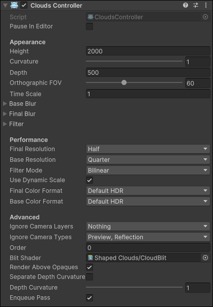

Clouds Controller
The Clouds Controller is responsible for managing all steps of the rendering process except for the rendering itself. It stores settings related to performance and visuals, and most features are enabled or disabled in this component. To add one to your scene, you can either add it by right-clicking in the hierarchy window and selecting "Shaped Clouds/Clouds Controller", or creating an empty GameObject and adding the component "Shaped Clouds/Clouds Controller" to it.
Inspector Settings

Now, let's go over each of those fields and what they do.
Pause In Editor
If enabled, pauses the controller in the editor. Wind won't move clouds, but they still update with a time scale of 0.
The main purpose of this field is to freeze clouds while in the editor, so they always start moving at the same point. Useful when clouds should be more consistent.
Height
Height of clouds, starting from the camera. Clouds are rendered around the camera at all times, instead of being in a real point in world space.
Used for distance and offset calculations, measured in meters.
Accurate values to real world will look similar, as long as the camera never tries to fly closer to the clouds. This asset was simply not made with that in mind.
When there are multiple Cloud Controllers active in the scene, this also determines the order they render in. Higher height (more distant) clouds will renders earlier, while lower height (closer) will render last.
Curvature
How much the clouds curve downwards to reach further down the horizon. With a curvature of 0, clouds appear completely flat. With a curvature of 1, clouds wrap all the way below the camera.
The higher the curvature, the more distorted the clouds shape and trajectory will be, especially when looking at the horizon.
High curvatures are ideal to make clouds look more 3D, but some real cloud formations look perfectly flat since they're either very thin or very far high.
Depth
The maximum thickness clouds have, only used when clouds render on top of opaque objects.
To avoid making clouds look extremely flat when on top of opaques, a calculation is done to smooth going from clouds to the object. The more the surface overlaps, the more it is covered in clouds. Depth determines the distance in meters it needs to overlap before being fully covered by clouds.
A depth of 0 turns clouds into a very thin line.
Orthographic FOV
When using an orthographic camera, this setting allows matching the appearance of clouds to this FOV, if it was a perspective camera.
Ignored when rendering into a perspective camera. But the same clouds can render to both a perspective and an orthographic camera in the same frame, provided they're not blocked from doing so.
Base/Final Blur
Blur effect applied to the Base and Final Textures. When disabled, no extra textures are allocated or rendering done.
Cloud Filter
Collection of settings determining how the Base Texture is rendered to the Final Texture. Has a specialized shader that can be replaced if modifications are needed.
Final/Base Resolution
Controls how large the temporary textures used by the clouds are, relative to the target texture. The resolution of the base texture will automatically be equal to the final resolution, if it's set to a larger value.
Try using as low of a resolution as possible, and increase it one by one, until you can't see the improvement between different settings. Should generally be kept low, especially the base resolution, as it's the best source of performance this asset can provide.
If you can't make clouds look right without a very high resolution, try using a blur for that same texture, the right settings might get rid of pixelated clouds while retaining a recognizable form.
Filter Mode
Point will make clouds pixelated, you should use Bilinear or Trilinear for smooth clouds. Unless you want the rough visual, of course.
Use Dynamic Scale
Scales textures according to dynamic resolution.
Final/Base Color Format
The texture color format of each texture. Default is Default HDR, which is RGBA Half in most platforms.
If the platform supports it, you can get a decent improvement in performance by using smaller formats, reducing VRAM and bandwitdh usage.
Ignore Camera Layers
Clouds won't render to cameras in these layers, they also respect their own layers and the culling mask from the camera itself.
Reflection Probes will ignore camera layers, which is why you should use the option below instead.
Ignore Camera Types
Clouds won't render to cameras of these types. By default, doesn't render to Preview (the small view you see when selecting a camera) and Reflection (Reflection Probes).
Order
If you need to override the order of rendering created by setting the height field, change this value. For this, lower values of order will render first, and higher will render later.
Blit Shader
Customize the shader used to blit clouds to the screen. Generally not a good idea to change it, but it might be required depending on what you're trying to do.
Render Above Opaques
When true, renders clouds on top of opaques, if they're further from the camera than the clouds. When false, clouds always render behind everything except the skybox.
Separate Depth Curvature
When enabled, uses a different curvature when calculating distance from the camera. Mainly useful to both have clouds look less flat and also have them very far from the camera.
Enqueue Pass
When enabled, clouds are enqueued as usual, but when disabled, this controller enters a separate list of controllers to be enqueued by a Renderer Feature. This feature doesn't control any settings, only when the scriptable pass is injected into the pipeline.
Although it might seem random, having this enabled makes clouds always render before any renderer feature, even if they are also injected into the AfterSkybox event. By only enqueing clouds in a renderer feature, you can make clouds render after another renderer feature, or put it between two other renderer features.